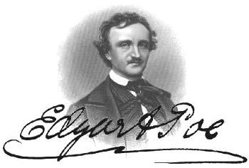

ЭДГАР АЛЛАН ПО — американский писатель, поэт, литературный критик и редактор, представитель американского романтизма. Наибольшую известность получил за свои «мрачные» рассказы. По был одним из первых американских писателей, кто создавал свои произведения в виде коротких рассказов, и считается создателем детективно-фантастического жанра в литературе. Его творчество способствовало появлению жанра научной фантастики.
Жизнь Э.А.По, в отличие от его рассказов, была менее интересной. Родился в семье нищего актёра со смешной фамилией По. После смерти актёра маленький Эдгар был усыновлён богатеньким бизнесменом Алланом, и у него был свой пони. Да-да. Самая настоящая маленькая лошадка. Служил в армии, где невозбранно напивался до беспамятного состояния и выкидывал адские фокусы, смеша тем самым публику. Именно там, кстати, автор и пристрастился к алкоголю. После армии поступил в военную академию, где продолжал отжигать и поэтому долго там не продержался. Степень раздолбайства вполне иллюстрирует следующая история. Когда для участия в параде всем курсантам, в том числе и нашему герою, было приказано явиться на плац в белых перчатках и портупее, последний, как истинный тролль, воспринял распоряжение дословно и надел только ремни и перчатки. Был немедленно отчислен. Впоследствии редакторствовал в журналах, писал стишки и рассказы с разным читательским успехом. Как-то влюбился в маму соседского мальчика, к которому ходил под предлогом «поиграть», а на самом деле для того, чтобы посозерцать прекрасную МИЛФУ. Однако женился По на своей тринадцатилетней кузине. Она неожиданно — ибо чахотка — умерла, поэтому в рассказах и стихах По так много дохлых юных красавиц. Пил, пил, пил… завязал и умер в сорок лет загадочным образом непонятно от чего. По самой вменяемой версии — от опухоли мозга.